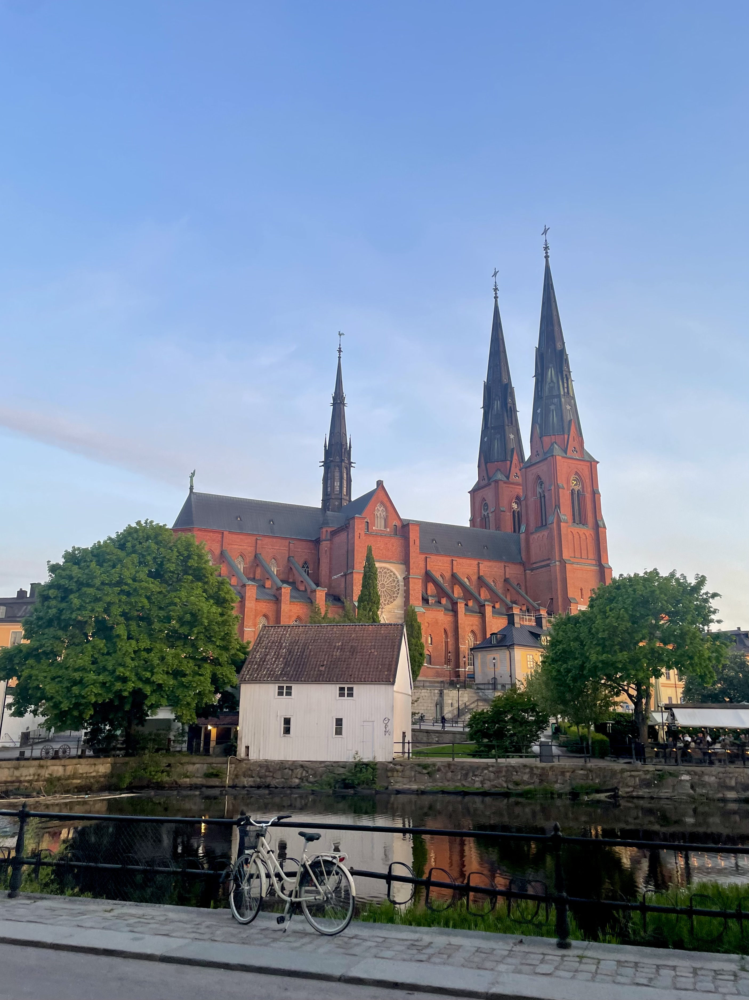
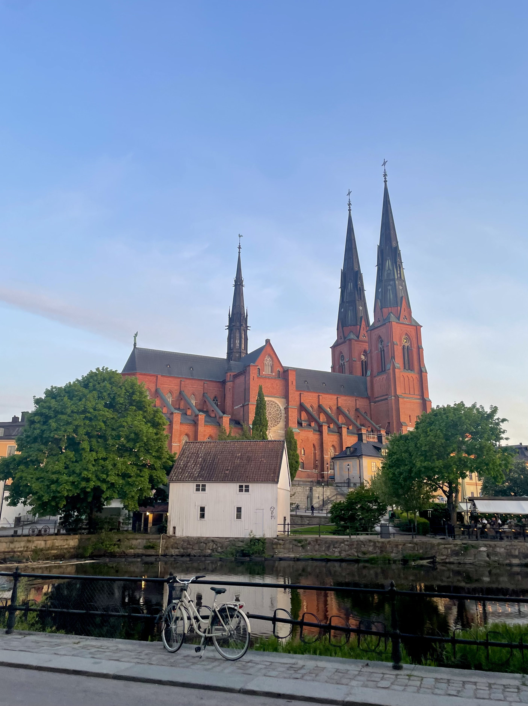
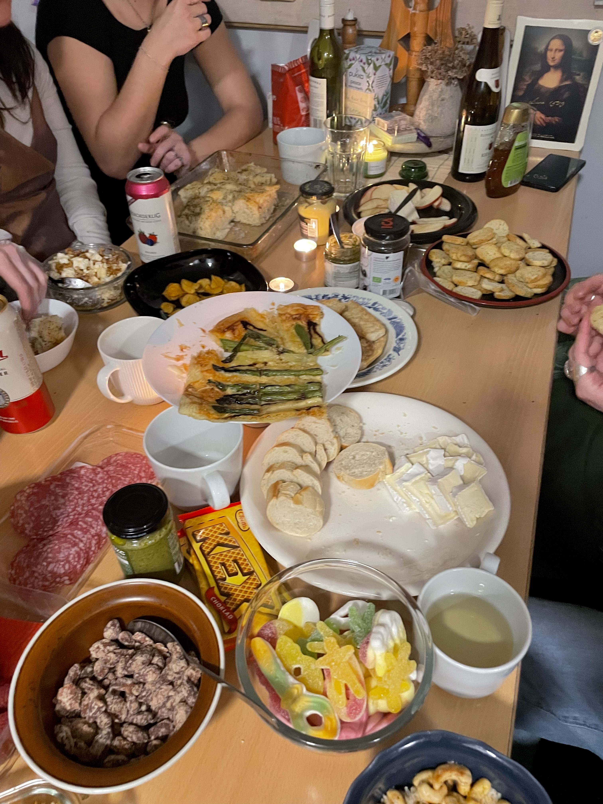
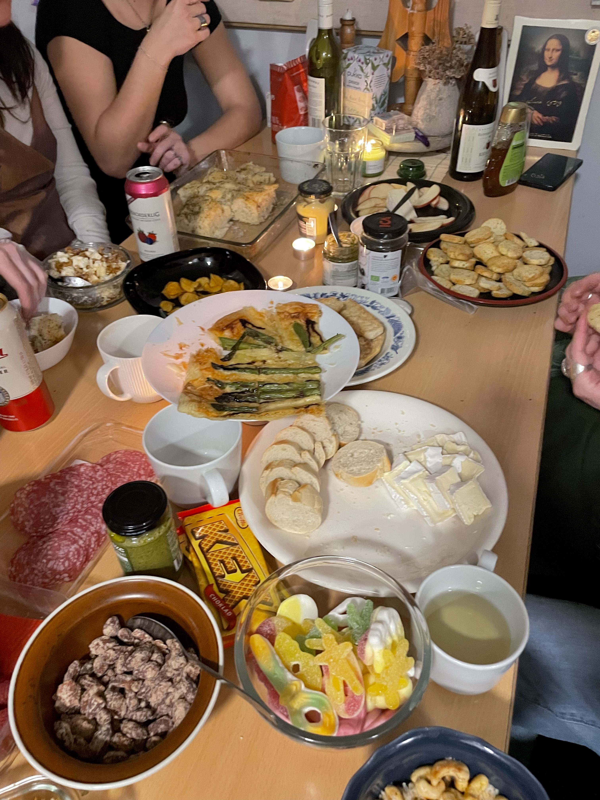

Winter Semester 2024
Studying Abroad in Uppsala, Sweden

 

 



[Placeholder for intro blog text — why I chose Uppsala, the program, etc.]
Exploring the City
[Placeholder for story about exploring Uppsala — favorite cafes, biking around town, etc.]
Academics & Nation Culture
[Placeholder for content about classes, academic culture, and nations]
Final thoughts
[Placeholder for overall thoughts, feelings, and advice to future students]